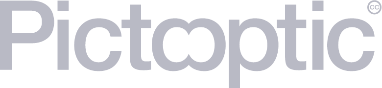

Type anything, see everything.
Generative art with The Noun Project API.
Technology
- The Noun Project API
- Node.js
- Express
- Pixi.js
- GreenSock
- Bodymovin
- Typeahead.js
Pictooptic is simple:
Type a word, and see a composition from icons depicting the word.
Icons and pictograms have the goal of unifying communication. However, they are subjectively understood and oftentimes have multiple meanings. A symbol meaning "peace" in Buddhism has the opposite meaning in western society.
Words can be charged with multiple meanings as well. A search for "palm" within Pictooptic will return a composition of trees, hands and religious icons. Icons strive to communicate directly to the subconscious but are ultimately subjective.
Pictooptic presents icons in a Rorschach-esque reflection. By abstracting icons through reflection we activate free-association within our creative mind. Within a search for "green" we may see the face of a boar emerge from the abstracted pattern. The icons for "green" will include frogs and leafs. It will also include conceptually related icons such as cars and lightbulbs.
These layers of abstraction stimulate passive creativity. It's subtly addictive like humming along to your favorite song.
All Icons and data in Pictooptic are sourced from
The Noun Project. All icon designers are credited within the information page of each search result. All graphics and code of Pictooptic are in the
Creative Commons.
Process info
Philip Bell
Visual Designer
Visual method collector and executor.
With 8+ years experience in freelance and agency visual design work,
Illustrator and Photoshop are old friends. Text editors, Git and Node are new best pals.
I like to know all methods involved in a project.
This curiosity leads to a constantly cultivating range of abilities and skills.
If I'm not good at it today, I'm familiar enough to jump in and get my hands dirty.
I'm looking for those who share an unstoppable desire to creatively push themselves and others.
Digital or print. I'm ready to jump in.